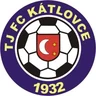

Posledný zápasA-mužstvo
 ŠK Blava 1928domáci
ŠK Blava 1928domáci OŠK Trenčianske Stankovcehostia
OŠK Trenčianske StankovcehostiaVýsledok 5:2
Výhrapolčas 3:2
Návrh webu · nie je to oficiálna stránka klubu
Jaslovské Bohunice · od roku 1928
Tak spieva hymna ŠK Blava, pomenovaného po potoku, ktorý tečie obcou. Muži hrajú IV. ligu a po jeseni sú na 7. mieste, U19 Starší dorast je 2. vo svojej súťaži.
Posledný zápasA-mužstvo
ŠK Blava 1928domáciOŠK Trenčianske StankovcehostiaVýsledok 5:2
Výhrapolčas 3:2
Posledný zápasU19 Starší dorast
ŠK Blava 1928 U19domáci MFK Stará Turáhostia
MFK Stará TuráhostiaVýsledok 3:1
Výhrapolčas 2:1
Posledný zápasU15 Starší žiaci
ŠK Blava 1928 U15domáci FC Bankahostia
FC BankahostiaVýsledok 2:2
Remízapolčas 0:1
Posledný zápasU13 Mladší žiaci
ŠK Blava 1928 U13domáci
TJ FC KátlovcehostiaVýsledok 5:0
Výhrapolčas 2:0
Posledný zápasU11 Prípravka
ŠK Blava 1928 U11domáci TJ Slavoj Bolerázhostia
TJ Slavoj Bolerázhostia
Výsledky prípraviek sa nezapisujú
Posledný zápasU9 Prípravka
ŠK Blava 1928 U9domáciTJ Slavoj Bolerázhostia
Výsledky prípraviek sa nezapisujú
Zimná prestávka. Jar sa začína v sobotu 6. marca 2027, áčko v ten deň hrá doma proti FK Junior Kanianka.
| # | Tím | Z | V | R | P | Skóre | B |
|---|---|---|---|---|---|---|---|
| 5 | 15 | 7 | 4 | 4 | 29:19 | 25 | |
| 6 | 15 | 6 | 5 | 4 | 22:16 | 23 | |
| 7 | 15 | 6 | 4 | 5 | 26:24 | 22 | |
| 8 | 15 | 7 | 0 | 8 | 23:20 | 21 | |
| 9 | 15 | 5 | 5 | 5 | 23:24 | 20 |
7.miesto zo 16 po 15 zápasoch, 6 výhier, 4 remízy, 5 prehier, skóre 26:24
Hymna ŠK Blava
Nie sme Real Madrid a nie sme Liverpool,
za nás si Maradona kopačky neobul.
Zdáme sa vám malí, ale my vieme, čo je boj.
Š! – K! – ŠK Blava! Víťazstvo vždy sladkú chuť máva.
Š! – K! – ŠK Blava! Hrdosť, česť a večná sláva.
Š! – K! – ŠK Blava! Modré nebo a zelená tráva.
Š! – K! – ŠK Blava! Sme pre teba zrodení!
Športové kluby Blava 1928 Jaslovské Bohunice združujú 8 klubov. Hrá sa, trénuje a súťaží v areáli pri štadióne a v obci.
Muži vo IV. lige, dorast, žiaci a prípravka.
Družstvo mužov vyhralo v roku 2024 extraligu, deti hrajú turnaje aj súťaže družstiev.
Facebook klubuŠtyri družstvá v súťažiach.
B.A.S.T. klub, trénujú mladí chalani aj dievča.
Zápasy doma aj vonku s osvedčenými súpermi.
D.A.R.T.S. klub v areáli kasární, najmladší klub ŠK Blava.
Výstupy a túry, pomoc pri obecných akciách.
Rekreačný tenis.
Od roku 1928
Začiatok organizovaného športu v obci: Blavania mali skutočné futbalové mužstvo, ktoré za rok odohralo 15 zápasov s mužstvami okolitých dedín. Hrali v bielych dresoch so zeleným pruhom na prsiach. Pri bohunickom kostole sa uskutočnil prvý futbalový zápas. Neskôr sa hrávalo v Jaslovciach na Barine.
História klubu